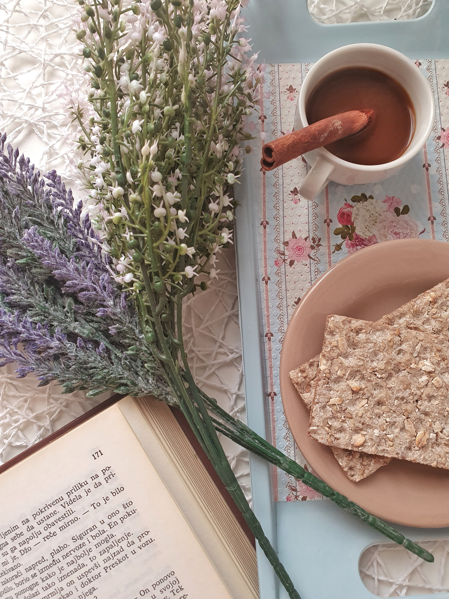
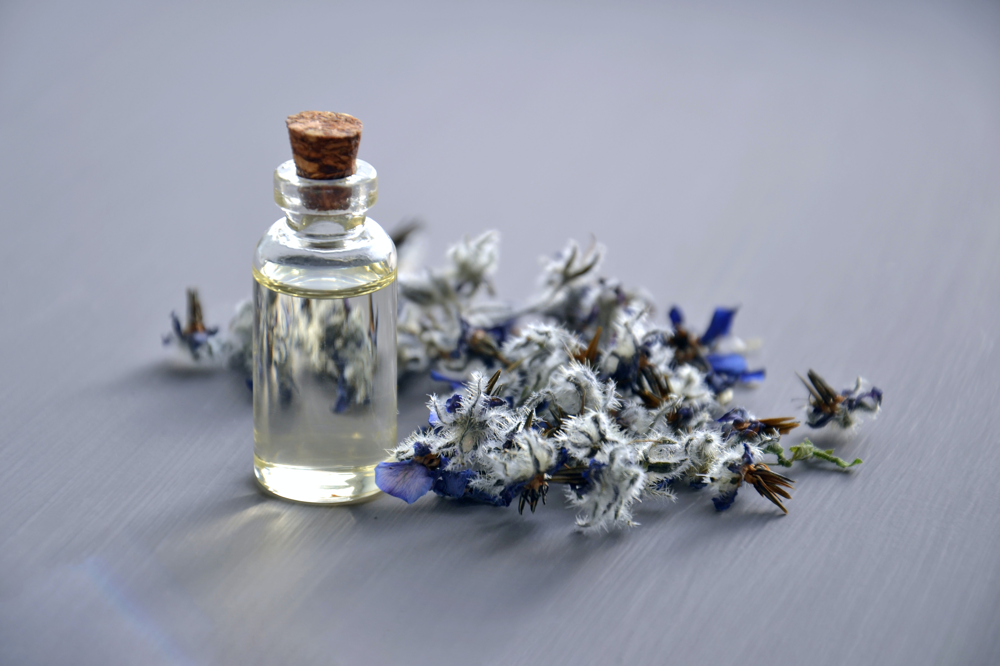

Ayurvedic medicine (“Ayurveda” for short) is one of the world's oldest holistic (“whole-body”) healing systems. It was developed more than 3,000 years ago in India.
It’s based on the belief that health and wellness depend on a delicate balance between the smind, body, and spirit. Its main goal is to promote good health, not fight disease.
But treatments may be geared toward specific health problems.
In the United States, it’s considered a form of complementary and alternative medicine (CAM).
Does It Work?
There are a few state-approved Ayurvedic schools in the U.S. But there’s no national standard training or certification program for those who practice this alternative therapy.
...The FDA doesn’t review or approve Ayurvedic products. In fact, it’s banned certain ones from entering the country since 2007. What’s more, the agency has warned that 1 in 5 Ayurvedic medicines contain toxic metals, like lead,
mercury, and arsenic. These heavy metals can cause life-threatening illness, especially in children.
Always talk to your doctor before you try Ayurveda or any other alternative medical treatment.

Ayurveda and Your Life Energy
Students of CAM therapy believe that everything in the universe - dead or alive - is connected. If your mind, body, and spirit are in harmony with the universe, you have good health. When something disrupts this balance, you get sick. Among the things that can upset this balance are genetic or birth defects,
injuries, climate and seasonal change, age, and your emotions.
Those who practice Ayurveda believe every person is made of five basic elements found in the universe: space, air, fire, water, and earth
Dosdhas controling our body
Every doshas inherits a unique mix of the three doshas. But one is usually stronger than the others. Each one controls a different body function.
Vata Dosha
Those who practice Ayurveda believe this is the most powerful of all three doshas. It controls very basic body functions, like how cells divide.
Pitta Dosha
This energy controls your digestion, metabolism (how well you break down foods), and certain hormones that are linked to your appetite.
Kapha Dosha
This life force controls muscle growth, body strength and stability, weight, and your immune system.
What Is Ayurvedic Medicine?
The ancient Indian medical system, also known as Ayurveda, is based ancient writings that rely on a “natural” and holistic approach to physical and mental health. Ayurvedic medicine is one of the worlds oldest medical systems and remains one of India’s traditional health care systems. Ayurvedic treatment combines products (mainly derived from plants,
but may also include animal, metal, and mineral), diet, exercise, and lifestyle.
What the Science Says About the Effectiveness of Ayurvedic Medicine

INFO
Results from a 2013 clinical trial compared two Ayurvedic formulations of plant extracts against the natural product glucosamine sulfate and the drug celecoxib in 440 people with knee osteoarthritis. All four products provided similar reductions in pain and improvements in function.
INFO
A preliminary and small NCCIH-funded 2011 pilot study with 43 people found that conventional and Ayurvedic treatments for rheumatoid arthritis were similarly effective. The conventional
drug tested was methotrexate and the Ayurvedic treatment included 40 herbal compounds.
INFO
Outcomes from a small short-term clinical trial with 89 men and women suggested that a formulation of five Ayurvedic herbs may help people with type 2 diabetes. However, other researchers said inadequate study designs haven’t allowed researchers to develop firm conclusions about Ayurveda for diabetes.